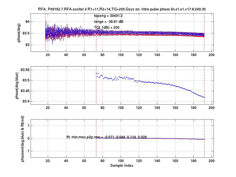

Plot title: none; Phase(deg) vs sample index;Ideal: One horizontal red line at any phase(deg) value.
Plot title: none; Phase(deg,blue) vs sample index; Ideal: One horizontal red line at same phase(deg) value as previous ideal plot.
Plot title: none; Phaseerr(deg,blue) & fit(red) vs sample index; Ideal: One horizontal red line at 0.0.
Illustration 28: Phafit (All)
